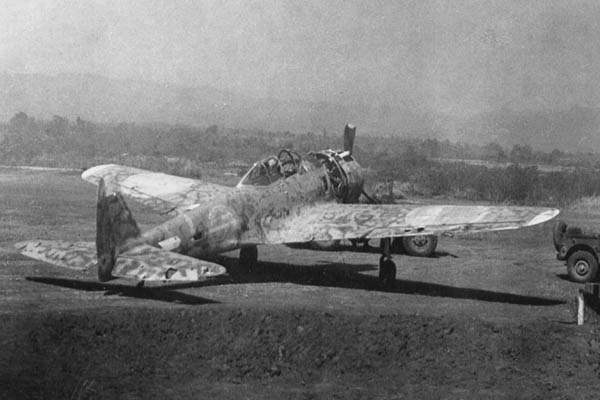

Одноместный японский истребитель Nakajima Ki-43 Hayabusa (Сокол сапсан) создан для замены Ki 27 по контракту ВВС Императорской армии Японии.
Конструкция Ki 27 была столь удачной, что, не прибегая к обычному для Японии конкурсу на производство самолета, ВВС уполномочил Накадзиму создать улучшенную модель своего истребителя Ки 27. Основным требованием к новому истребителю была высокая скорость - не менее 500 км/ч при сохранении маневренности на уровне Ki 27.
Три первых прототипа были готовы и прошли испытания в 1939 году, но они не обладали должной маневренностью, поэтому были собраны еще 10 предсерийных самолетов с разными конфигурациями, в двух из которых были использованы новые боевые закрылки типа "бабочка", которые в значительной мере и предопределили судьбу проекта - при их выпускании самолет становился значительно более маневренным.
Осенью 1942 года модификация Ki-43-II поступила в производство. Главным отличием от предыдущих моделей являлось использование более мощного мотора Hа-115 мощностью 1130 л.с. и трехлопастного цельнометаллического винта постоянного шага (на предыдущей модели был двухлопастной винт). Крылья были усилены для установки 250 кг бомб, а пулеметы заменены на крупнокалиберные. Кроме того, крыльевые топливные баки сделали протектированными, а защита пилота теперь обеспечивалась бронеспинкой толщиной 13 мм (на предыдущих моделях для облегчения самолета не была предусмотрена защита пилота и топливных баков).
Всего изготовлено 5919 Ki 43, большую часть которых составляли модификации Ki 43-IIa.